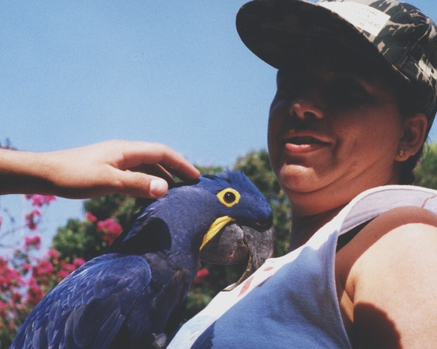
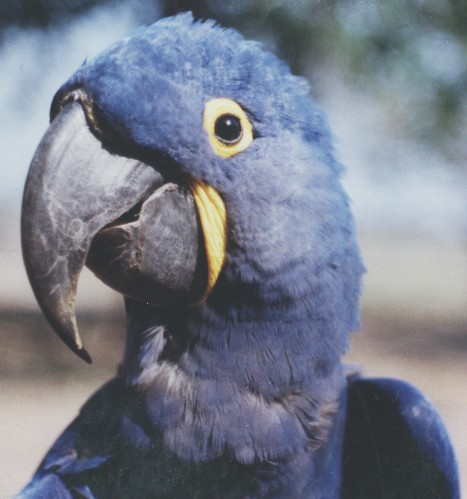
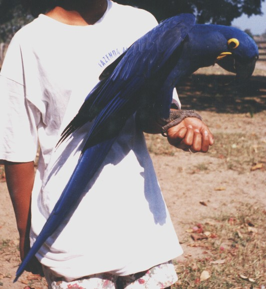
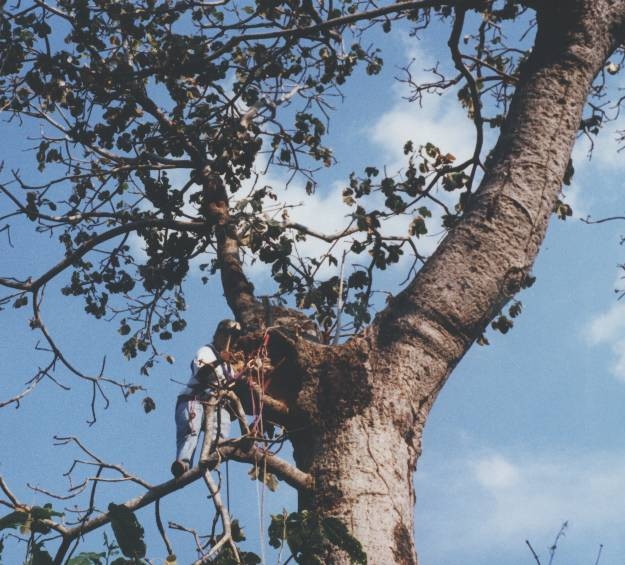
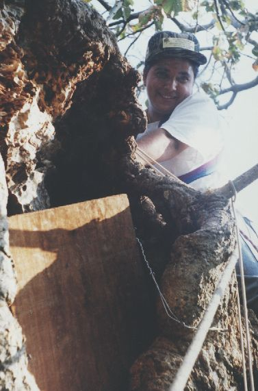
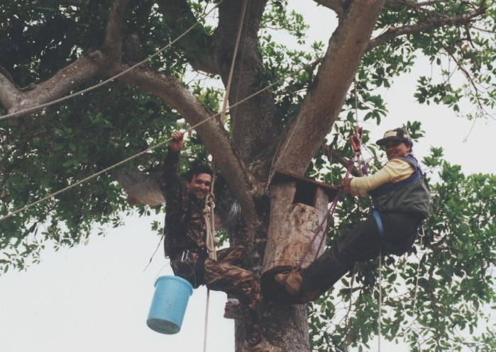
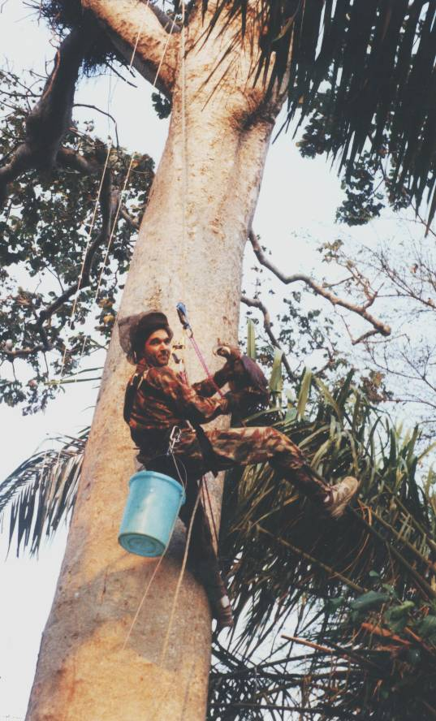
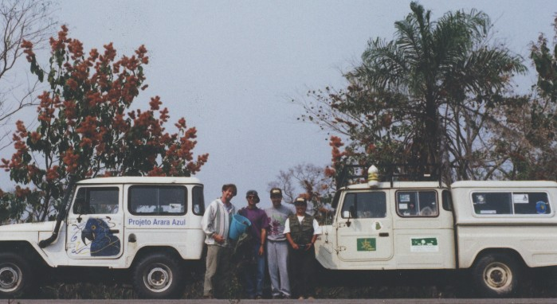

|
Projeto
Arara-azul
|
_  _
_
|
 Local:
Pantanal da Nhecolândia - MS - Brasil Foto: arquivo CEPEN /
375p / M. D. N. Xavier
Local:
Pantanal da Nhecolândia - MS - Brasil Foto: arquivo CEPEN /
375p / M. D. N. Xavier

Local:
Pantanal da Nhecolândia - MS - Brasil Foto: arquivo CEPEN /
377p / M. D. N. Xavier
Neiva
Guedes e um exemplar de uma de suas grandes paixões, a arara-azul.

Local:
Pantanal da Nhecolândia - MS - Brasil Foto: arquivo CEPEN /
376p / M. D. N. Xavier

Local:
Pantanal da Nhecolândia - MS - Brasil Foto: arquivo CEPEN /
374bp / M. D. N. Xavier
Araras-azuis
capturadas na natureza, para servir como animal de estimação.
Este
é um dos grandes problemas para a espécie
Subprojeto:
"Manejo
de ninhos naturais e instalação de ninhos artificiais
para
a Arara-azul, Anodorhynchus hyacinthinus
no
Pantanal Matogrossense"

Local:
Pantanal da Nhecolândia - MS - Brasil Foto: arquivo CEPEN /
372p / M. D. N. Xavier
Neiva
Guedes, praticando o arborismo para consertar ninhos de arara-azul, aventura-se
nas alturas.
Na
maioria das vezes, sobre manduvi, espécie de árvore gigante
e frágil, quase sempre completamente oca, cujos galhos se quebram
com facilidade, mas onde as araras nidificam predominantemente.

Local:
Pantanal da Nhecolândia - MS - Brasil Foto: arquivo CEPEN /
371p / M. D. N. Xavier
Neiva
Guedes e um ninho de arara-azul num manduvi, agora consertado.

Local:
Fazenda Santa Clara - Pantanal do Abobral - MS - Brasil Foto: arquivo
CEPEN / 388p / Márcio R. Rikino
Marcelo
D. N. Xavier e Neiva M. R. Guedes instalando ninho artificial.

Local:
Pantanal do Abobral - MS - Brasil Foto: arquivo CEPEN / 386p / Neiva
Guedes
Marcelo
D. N. Xavier com a arara "marcelinha",
que
foi resgatada por acaso do seu "ninho-presídio" após quase
um ano de natural prisão.

Local:
Pantanal, margens da BR 262 - MS - Brasil Foto: arquivo CEPEN / 392p
/ Márcio R. Rikino
Equipe
de trabalho:
Marc
Johnson com a arara "marcelinha" no balde (viajando para o CRAS - Centro
de Reabilitação
de
Animais Silvestres), Walfrido Tomas, Marcelo Xavier,
Neiva
Guedes e Márcio Rikino (oculto atrás da câmera).